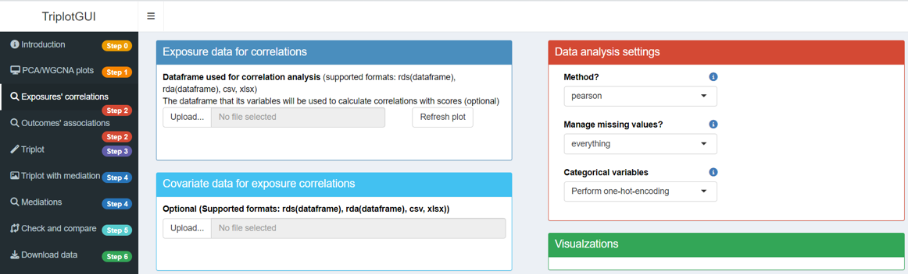

If you haven’t done so already, please read Introduction to familiarize yourself with the steps of TriplotGUI. In this manual section, we will go through the statistical analysis and visualization involved in each step of TriplotGUI. If you want to search for the meaning of something specific (e.g., a button or a box), please press ctrl+F and enter the keyword; you will likely find what you need.
If you have not opened the app yet, you can use the web application of TriplotGUI or follow the Setup section to open the interface using TriplotGUI_shiny().
Note: You can later use the example data in our repository to test the TriplotGUI interface by following the Tutorial(simple) and Tutorial(complex) sections. This page serves as a detailed manual that covers everything about TriplotGUI.
1 Step1: Data reduction of Omics variables
After reading the introduction/welcome page (Step 0), click on Step 1 in the sidebar. You will then see the layout as shown below.
{kind=link}
This step transforms the Omics data into a number of components using Principal Component Analysis (PCA) or Weighted Correlation Network Analysis (WGCNA).
Five boxes with unique features are presented, and you can infer their purposes from their titles. Now, let’s go through each box in detail.
1.1 Data for PCA/WGCNA
1.1.1 Basics
The darkblue box is for uploading Omics data, which should meet these criteria:
- The data must be in either csv, xlsx, rds, or rda format. If using rds format, it should be a dataframe. In the case of rda format, the rda object should contain only one dataframe.
- The rows of data should represent observations, while the columns should represent variables (Omics features).
- Variable names (column names) must not contain special characters such as
' ','(',')',':','/','-',',', or'@'. - No missing values are allowed in the Omics data.
- Additionally, the number and order of observations must be the same across all uploaded data.
In TriplotGUI, we do not provide functionalities for handling missing data or other data pre-processing (e.g., transformation, normalization) in our application. This decision is due to the variability of possible methods for these tasks. Users are expected to perform any necessary data pre-processing before uploading their data to TriplotGUI.
1.1.2 More
After uploading your data, a text will appear showing the number of rows and columns in your Omics data frame. Three buttons will also become available: Inspect variable class(es), remove variables(s), Force all variables to numeric.
Inspect variable class(es): Click this button to check if your variables are in the correct format. For example, you may want metabolite features in numeric rather than character format. After selecting variables and clicking OK, their classes will be displayed in the box.
remove variable(s): Use this to remove variables from the uploaded data. Select variables to remove and click OK. The removed variables will be listed in the box and excluded from downstream analysis. This action is reversible - clicking the button again and selecting Cancel will restore all variables.
Force all variables to numeric: This button converts all remaining variables to numeric format, which is necessary for PCA or WGCNA analysis on the Omics data.
These features may allow you to inspect, clean, and prepare your data for analysis without manually editing the original dataset.
1.1.3 Reset all
At the right side of the Omics data upload section, there is a button labeled Reset all. Clicking this button will remove all your uploads and settings, returning the interface to its default state. This feature is convenient for starting a new analysis or restarting a workflow.
1.2 Auxiliary data
The lightblue box is for uploading auxiliary data. The variables in this data can serve two purposes: (1) Customizing the color, size, and shape of scores in the visualizations in Step 1 (See section 1.4.2). (2) Providing pairing information (case-control match) for outcomes’ associations (See section 3.3.2).
1.2.1 Basics
The requirements for the uploaded auxiliary data are the similar as those outlined in section 1.1.1.
- The data must be in either csv, xlsx, rds, or rda format. If using rds format, it should be a dataframe. In the case of rda format, the rda object should contain only one dataframe.
- The rows of data should represent observations, while the columns should represent variables (auxiliary variables).
- Variable names (column names) must not contain special characters such as
' ','(',')',':','/','-',',', or'@'. - Missing values are allowed in the auxiliary data.
- Additionally, the number and order of observations must be the same across all uploaded data.
1.2.2 More
After uploading the auxiliary data, a text will display the number of rows and columns in the auxiliary data frame. Three buttons will appear: Inspect variable class(es), remove variable(s), Change variable class.
Inspect variable class(es): Same functionality as described in section 1.1.2
remove variable(s): Same functionality as described in section 1.1.2
Change variable class: This button allows you to transform variables to either factor or numeric types. Select the variables to be transformed, click OK, and they will be converted to the chosen class for use in downstream analysis. This feature helps users easily transform variables to numeric and factor formats, corresponding to numeric and categorical variables.
1.3 Data analysis settings
The red box is where you make choices for performing data analysis.
1.3.1 Basics
- Method: Choose between principal component analysis (PCA) or weighted correlation network analysis (WGCNA) for data reduction. Default is PCA.
WGCNA separates Omics variables into clusters, performs PCA on each cluster, and extracts the first principal component of each cluster. These are called “modules” to distinguish from PCA components.
The clustering method used is the default hierarchical clustering method provided by cutreeDynamic() in the dynamicTreeCut package.
PCA function: Select either prcomp or principal for PCA/WGCNA. Default is prcomp.
-
Max number of components: (PCA only) Determines how many principal components to use in downstream analysis. Default is 5 or the number of Omics variables if less than 5.
Minimum number for variables per module: (WGCNA only) Sets the minimum number of variables allowed in each WGCNA cluster. Default is 2.
Center: Choose whether to zero-center Omics variables before PCA/WGCNA. Default is Yes.
Scale: Choose whether to scale Omics variables to unit variance before PCA/WGCNA. Default is Yes.
1.3.2 More
- Rotation: This button appears when the PCA function is set to principal. It allows users to select how they want to transform principal components. For an explanation of rotation options, please refer to the documentation. In TriplotGUI, the default rotation setting is none.
1.4 Visualization settings
The orange box allows you to modify visualization outputs:
1.4.1 Basics
- Plotting options: Four options are provided: (1) scores: The scores of principal components are plotted. (2) loadings: The loadings of principal components are plotted. (3) biplots: Both scores and loadings are scaled and plotted on the same graph. (4) screeplot: When the Method is selected as PCA, it shows how much variance each principal component contributes. When WGCNA is selected, it shows the variance contributed by each cluster and first principal component. By default, none of the four options are selected.
Component/module on first axis: This determines which component/module will be plotted on the x-axis. The default is 1 (the first one). Components are ordered from highest to lowest contribution to variance, while modules are ordered from clusters with the most to the least variables.
Component/module on second axis: This determines which component/module will be plotted on the y-axis. The default is 2 (the second one), with the same ordering criteria as for the first axis.
Type of loadings: Two options are provided: Eigenvectors and Eigenvectors × sqrt(eigenvalues). These calculations correspond to the output value referred to as “rotation” in the prcomp package and “loadings” in the principal package.
1.4.2 More
Loading labels: This option appears when you select loadings or biplot in Plotting options. It determines whether labels for loadings will be shown on the plot. The default is Yes.
Loading Cut by: This option appears when you select loadings or biplot in Plotting options. It allows users to display only loadings above a certain absolute value (Absolute) or a percentage of the maximum loading (Proportion). The default is Proportion.
- Absolute loading length: When Absolute is selected in Loading Cut by, a slider appears to let users decide which loadings above a specified value will be displayed on the plot.
Proportion of maximum loading: When selecting Proportion in Loading Cut by, a slider will show up to let user decide only loadings above how much percent of the maximum loading will show up on the plot.
Score color by: After uploading Auxiliary data and selecting loadings or biplot in Plotting options, this button allows users to color score points based on one numeric or categorical variable from the auxiliary data. By default, no variables are selected.
Score shape by: Similar to Score color by, this button allows users to change the shape of score points based on one categorical variable from the auxiliary data. By default, no variables are selected.
- Score size by: Similar to Score color by, this button allows users to change the sie of score points based on one numeric variable from the auxiliary data. By default, no variables are selected.
1.5 Visualizations
The green box represents visualization outputs. With Omics data uploaded, selecting Plotting options in the visualization settings will display the corresponding plots here.
2 Step2: Exposure associations
After uploading Omics and auxiliary data (optional) in Step 1, click “Exposure associations” in Step 2 on the sidebar. You will then see the layout as shown below. 
This step is to calculate the associations between the components/modules from Step 1 and the exposures uploaded in this step.
Four boxes with unique features are presented. Now we will go through each box in detail:
2.1 Exposure data
2.1.1 Basics
The dark blue box is for uploading exposure data. Requirements are the similar as in 1.1.1.
- The data must be in either csv, xlsx, rds, or rda format. If using rds format, it should be a dataframe. In the case of rda format, the rda object should contain only one dataframe.
- The rows of data should represent observations, while the columns should represent variables (exposures).
- Variable names (column names) must not contain special characters such as
' ','(',')',':','/','-',',', or'@'. - Missing values are allowed in the exposure data. When missing values exists, by default, they are handled according to the ‘pairwise.complete.obs’ in the ‘cor()’ function in the cor package. The association or covariance between each pair of variables is computed using all complete pairs of observations on those variables. Please specify in the Missing values if you want to use other options.
- Additionally, the number and order of observations must be the same across all uploaded data.
2.1.2 More
After uploading, a text shows row and column counts. Three buttons appear: Inspect variable class(es), remove variable(s), Change variable class.
2.2 Covariate data
The light blue box for uploading covariate data, usable as confounders for exposure-components/modules associations.
2.2.1 Basics
Requirements are the similar as in 1.1.1.
- The data must be in either csv, xlsx, rds, or rda format. If using rds format, it should be a dataframe. In the case of rda format, the rda object should contain only one dataframe.
- The rows of data should represent observations, while the columns should represent variables (covariates).
- Variable names (column names) must not contain special characters such as
' ','(',')',':','/','-',',', or'@'. - Missing values are allowed in the covariate data. When missing values exists, observations that contain missing values in any of the variables used in a model will not be used.
- Additionally, the number and order of observations must be the same across all uploaded data.
2.2.2 More
After uploading, a text shows row and column counts. The same three buttons appear: Inspect variable class(es), remove variable(s), Change variable class.
2.3 Data analysis settings
The red box is for exposure association analysis choices.
2.3.1 Basics
Method: Three methods inherited from the cor package are supported for continuous exposures: Pearson, Spearman, Kendall. Please check cor package for more information. The default in TriplotGUI is Spearman.
Missing values: The approaches for managing missing values inherited from the cor package are supported for continuous exposures. Please check cor package for more information. The default in TriplotGUI is everything.
-
Categorical variables: Two options are provided: Perform one-hot-encoding and Use original. The default option is Use original.
Perform one-hot-encoding: a categorical exposure variable with 2 classes is transformed to a binary variable with 0 and 1 values and then used as a numeric variable; A categorical exposure variable with n classes (n>2) are transformed to n binary variables with 0 and 1 values.
Use original: No transformation is made on the categorical variables. Linear models regressing components/modules on each categorical variable and analysis of variance (ANOVA) are used for calculating the square root of the proportion of sum of squares of a categorical variable out of the total sum of square. This value is use as the estimate of exposure associations and the corresponding p value form the ANOVA is used as the p value for exposure associations.
2.3.2 More
- Confounder adjustment: Upon uploading covariate data, users choose whether to adjust for covariates. Default is No.
2.4 Visualizations
The green box represents visualization outputs. With Omics data from Step 1 and exposure data uploaded, clicking the Refresh plot button will display the associations between exposures and the two selected components/modules (selected from Step 1). The figure can be downloaded by clicking Download figure.
3 Step3: Outcome associations.
After uploading Omics and auxiliary data (optional) in Step 1, clicking “Outcome associations” in Step 3 on the sidebar will display the layout for this step.
{kind=link}
This step calculates risk associations between principal components from Step 1 and outcomes uploaded here.
Five boxes with unique features are presented. Now we will go through each box in detail:
3.1 Outcome data
3.1.1 Basics
The dark blue box is for uploading outcome data. The requirements are the similar as in section 1.1.1.
- The data must be in either csv, xlsx, rds, or rda format. If using rds format, it should be a dataframe. In the case of rda format, the rda object should contain only one dataframe.
- The rows of data should represent observations, while the columns should represent variables (outcomes).
- Variable names (column names) must not contain special characters such as
' ','(',')',':','/','-',',', or'@'. - Missing values are allowed in the outcome data. When missing values exists, observations that contain missing values in any of the variables used in a model will not be used.
- Additionally, the number and order of observations must be the same across all uploaded data.
3.1.2 More
After uploading, a text displays the number of rows and columns in the outcome data frame. Three buttons appear: Inspect variable class(es), remove variable(s), Change variable class.
3.2 Covariate data
The light blue box is for uploading covariate data. After removing redundant variables, the remaining data can be used as confounders for adjusting associations between outcomes and components/modules.
3.2.1 Basics
The requirements for covariate data are the similar as in section 1.1.1.
- The data must be in either csv, xlsx, rds, or rda format. If using rds format, it should be a dataframe. In the case of rda format, the rda object should contain only one dataframe.
- The rows of data should represent observations, while the columns should represent variables (covariates).
- Variable names (column names) must not contain special characters such as
' ','(',')',':','/','-',',', or'@'. - Missing values are allowed in the covariate data. When missing values exists, observations that contain missing values in any of the variables used in a model will not be used.
- Additionally, the number and order of observations must be the same across all uploaded data.
3.2.2 More
After uploading, a text displays the number of rows and columns. The same three buttons appear: Inspect variable class(es), remove variable(s), Change variable class.
3.3 Data analysis settings
The red box is for making choices in performing risk association analysis.
For outcomes - components/modules associations, statistical analyses are performed differently based on outcome classes and provided information. A table summarizes the methods and R packages used.
{kind=link}
3.3.1 Basics
- log(risk): Users choose between beta coefficients or odds ratios for risk estimations. Options are Yes(useful for odds ratio) or No(useful for beta coefficient). Default is No(useful for beta coefficient).
3.3.2 More
Confounder adjustment: Appears after uploading covariate data. Users choose whether to adjust for covariates. Default is No.
Multinomial Regression: Appears for categorical outcome variables with >2 classes. Choosing No performs one-hot-encoding to transfrom these variables to n binary variables with 0 and 1 values; Yes performs multinomial regression. Default is No.
- Pairing variable: Appears when auxiliary data (1.2.1) is uploaded. From auxiliary data, users can select a variable containing pairing information for modeling. For example, the matched case-control pair could constitute a categorical variable, where each pair of case and control is given a unique number. Upon selecting the variable, the information can be fed in the modelling of outcome - components/modules associations.
3.4 Visualization settings
The orange box is for modifying visualization outputs.
3.4.1 Basics
Confidence level: Sets the confidence level for risk estimate intervals. Default is 0.95.
Whisker length: Sets the whisker length of confidence intervals. Default is 0.1.
3.5 Visualizations
The green box represents visualization outputs. With Omics data from Step 1 and outcome data uploaded, clicking the Refresh plot button displays the risk associations between outcomes and two selected components/modules (chosen from Step 1). The resulting figure can be downloaded by clicking the Download figure button.
4 Step4: Meet-in-the-middle Triplot Visualization
After uploading Omics and either exposure or outcome data (or both), you can click “Triplot” in Step 3 on the sidebar to view the layout for this step.
{kind=link}
This step co-visualizes scores, loadings, exposure associations, and outcome associations generated from Steps 1-3 as three different layers in one 2-dimensional plot.
Data upload is needed in Steps 1-3. Steps 4-5 use the uploaded data from Steps 1 and 2, with no further data upload needed.
Two boxes are presented in this step. One contains settings options where users can adjust the details of the visualization output. The other displays the Triplot itself, combining the information from previous steps into a single, comprehensive visualization.
4.1 Visualization settings
The orange box represents visualization settings that allow you to customize the triplot output:
Component/module on first/second axis: This option lets you select which component or module will be plotted on the x-axis (first axis) and y-axis (second axis). The default settings are 1 for the first axis and 2 for the second. Components are ordered from the highest contribution to variance to the lowest, while modules are ordered based on the cluster size, from the most variables to the least.
Plot loadings/exposures/risks: This setting determines whether loadings, exposure association estimates, and risk estimates will be included in the visualization. The default is set to Yes. If you select No, buttons relevant to plotting loadings, exposures, and risks will not appear.
Loading/Exposure/Risk labels: This option controls whether labels for loadings, exposures, and risk estimates will be displayed in the visualization. The default is Yes for exposure and risk labels, while loading labels are set to No.
Loading/Exposure/Risk limits: The limits of loadings, exposures and risk estimates on the visualization. The default is set as 1.1 times of the maximum absolute loading value, 1.1 times of the maximum absolute exposure association estimates, 1.1 times of the maximum absolute value for risk estimates’ confidence intervals.
Arrow tip length: The arrow tip length of loadings. The default is 0.02.
Loading cut: Loadings below the value will not show up on the plot.
Plot Scores: This option determines whether the scores will be plotted on the visualization. The default is No.
Whisker length: Sets the whisker length of confidence intervals. Default is 0.1.
log(risk): Users choose between beta coefficients or odds ratios for risk estimations. Options are Yes(useful for odds ratio) or No(useful for beta coefficient). Default is No(useful for beta coefficient).
4.2 Triplot
The green box represents visualization outputs. With Omics data from Step 1 and exposure or outcome data uploaded, clicking the Refresh plot button will co-visualize the exposure associations and outcome associations with the selected components/modules. The figure can be downloaded by clicking Download figure.
5 Step5: Mediation analysis and visualization
After completing the first three steps, we move beyond exposure-Omics-outcome co-visualization to mediation analysis. You can access this by clicking “Mediations” in Step 5 on the sidebar.
This step performs mediation analysis using selected exposures and outcomes, treating the components/modules as mediators. Confounders from Step 2-3 are automatically adjusted for both exposure-mediator and mediator-outcome associations in this analysis.
The mediation results, which include indirect, direct and total effects and the proportion mediated, can be visualized for each combination of exposure, mediator and outcome respectively with a barplot for mediation.
In this step, three type of boxes will appear: one for “Data Analysis Settings”, another for “Visualization Settings”, and the third for “Visualization Output”. The first two boxes contain options for customizing the analysis and visualization, while the third box displays the resulting mediation barplot.
{kind=link}
The first four steps, with their flexible options in analysis and visualization settings, are designed to help users explore their data and results. After experimenting in Steps 1-4, users should have formed ideas about what to include in their final analysis and figures (e.g., whether to perform confounder adjustment or not; whether to present risk estimates as beta-coefficients or odds ratios).
We recommend that users Reset all in Step 1 and re-perform Steps 1-4 to create a cleaner version of these steps before proceeding to Step 5. For example, avoid uploading auxiliary data or covariates if you don’t plan to use them. This approach ensures a more streamlined and focused analysis as you move into the mediation analysis phase.
5.1 Data analysis settings
5.1.1 Basics
- Type of mediation analysis: Two options are provided, Coventional and Counterfactual. By selecting Conventional, mediation analysis based on the approach originated by Baron and Kenny will be performed, utilizing the product method. In contrast, selecting Counterfactual mediation analysis employs a potential outcome framework provided by the mediation package. Here is a summary of these two methods in TriplotGUI:
{kind=link}
5.1.2 More
Exposure variables: This button appears when exposure data is uploaded in Step 2. Users can select which specific exposures they want to include in the mediation analysis.
Outcome variables: This button appears when exposure data is uploaded in Step 3. Users can select which specific outcomes they want to include in the mediation analysis.
Treatment/control: When the mediation method is not selected or is set to Counterfactual, empty fields for exposure variables will appear after exposure data is uploaded in step 2 and exposure variables for mediation analysis are selected. For each selected exposure variable, users need to specify two different values or classes to serve as the treatment and control contrast, respectively. For continuous exposures, this involves specifying two distinct numerical values. For categorical exposures, users must choose two different classes.
When Counterfactual is chosen as the mediation method, it is essential that users specify all treatment and control contrast values before initiating the mediation analysis. These values must be distinct from each other.
For numeric exposure variables, the system displays the variable’s range, and users are advised to select treatment and control contrast values within this range. In the case of categorical exposure variables, the system indicates the number of levels present. Users are then limited to selecting from these existing levels when specifying treatment and control contrasts. This approach ensures that the mediation analysis is conducted using valid and appropriate contrast values, thereby enhancing the reliability of the results.
5.1.3 Running mediation analysis
Click when add new variables/ run with different methods:
Unlike previous steps that automatically perform corresponding analyses upon data upload or setting changes, users must manually initiate the mediation analysis by clicking the Do mediation button. This step is necessary due to the potentially time-consuming nature of mediation analysis, which is performed on each combination of exposure, component/module, and outcome.
Before clicking the button, users should select the desired exposures and outcomes for the mediation analysis. If required, they should also specify the treatment and control contrasts for exposures. Upon clicking the Do mediation button, it will turn grey, indicating that the analysis is in progress. A progress bar will appear in the right bottom corner, serving as a reminder that the mediation analysis is still running.
Once the analysis is complete, the progress bar will disappear, and the button will revert to its original white color. This visual feedback helps users track the status of their mediation analysis and know when the results are ready for review.
By selecting exposures, outcomes and specifying mediation method and then clicking Do mediation, the mediation analysis will be run and the results will be saved for the selected exposures, outcomes and mediation methods.
Visualization will be based on what is run in the Data analysis settings and selected in the Visualization settings. And the visualization will only show the results (using specific exposures, outcomes and mediation methods) that are generated and saved.
- TriplotGUI memorizes what mediation analysis has been run (e.g. Using what exposure, what outcome, what method). This means that once you have run mediation analysis on certain exposures and outcomes using certain method, even if you unselect an exposure or outcome, their mediation results are not deleted. You can check this by reselecting the unselected exposure/outcome and click Do mediation. You may notice that the mediation analysis is finished rather fast since the result is already generated.
- You can run Counterfactual and Conventional analysis alternatively on the same exposure-outcome pair. The result for different methods will be saved respectively.
- For a Counterfactual mediation analysis, if you have used exposures-outcomes pairs to run mediation analysis, given specific treatment or control contrasts for exposures, once you use a different treatment or control contrasts for an exposure, all the mediation analysis connecting with that exposure will be rerun and the new results will replaces the corresponding old ones. The last-used treatment and control contrasts for running mediation analysis will be memorized and show up in the Treatment and Control.
- Counterfactual mediation analysis may take more time to run Conventional mediation analysis.
5.2 Visualization settings
The orange box represents visualization settings for conventional and counterfactual mediation, respectively. After running mediation analyses, Exposure/Mediator/Outcome variables involved in the analyses appear in the options for visualization settings. Users can select from each combination of exposure, mediator, and outcome to create the mediation barplot.
Clicking the Refresh plot button generates the mediation barplot for the selected exposure, mediator, and outcome.
5.3 Visualizations
The green box displays visualization outputs for conventional and counterfactual mediation, respectively, allowing for clear comparison between the two methods. It focuses on visualizing the magnitude and direction of single mediation estimates through barplots. These plots use one exposure, one mediator (component/module), and one outcome.
Users can download the figure by clicking Download conventional/counterfactual mediation barplot.
6 Comparative Visualization:
Through heatmaps, users can visualize the exposures’ associations with components/modules, the outcomes’ associations with components/modules, mediation estimates and proportion mediated for each component/module and exposure-outcome pair, as well as their significance levels.
{kind=link}
6.1 Visualization settings
The orange box contains visualization settings.
Component(s)/module(s) to remove: All selected components/modules from Step 1 appear as rows in the heatmap. Users can choose which components/modules they want to exclude from the heatmap visualizations.
Show exposure association estimates/risk estimates/mediation results: Users can determine what to display in the heatmap, with the default setting being Yes for all options.
Exposure(s)/Risk(s) to remove: All selected exposures and outcomes from Step 2-3 appear as columns in the heatmap. Users can choose which exposures and outcomes to remove from the heatmap visualizations in this section.
-
Mediation result type: For the mediation results in the heatmap, users can select which specific results to display. Options include indirect effect, total effect, and two types of proportion mediated.PM(Proportion Mediated) and APM(Adjusted Proportion Mediated): \[PM=\frac{IE}{IE+DE}\] \[APM=\frac{IE}{|IE|+|DE|}\cdot\frac{|IE+DE|}{IE+DE}=\frac{IE}{IE+DE}\cdot\frac{|IE+DE|}{|IE|+|DE|}\]
PM represents the conventional method of calculating proportion mediated. However, it doesn’t account for scenarios where direct and indirect effects have opposite directions, potentially resulting in a proportion mediated exceeding 1.
APM introduces a novel approach to calculate adjusted proportion mediated. It uses the absolute values of direct and indirect effects to determine the total effect, constraining the adjusted proportion mediated between 0 and 1. APM highlights the proportion of influence the indirect effect has within the range of all effects, while considering the directionality of indirect and total effects.
6.2 Visualizations
The green box displays visualization outputs. Clicking the Refresh plot button generates heatmaps showing correlations (between selected exposures and components/modules), risk estimates (between selected outcomes and components/modules), and mediation results (based on selected exposures, outcomes, components/modules, and completed mediation analysis from Step 5). Users can download the resulting figure by clicking the Download figure button.
7 Data download:
At this step, users can download data and intermediate results produced during data analysis and visualization.
{kind=link}
7.1 Download processed data
In the darkblue box, users can download processed data in CSV format. The processed data of Omics, exposures and outcomes (i.e., data after possible variable removal and class changes mentioned in sections 1.1.2 and 1.2.2) can be viewed and downloaded here.
Processed Omics/exposure/outcome data: The processed version of Omics/exposure/outcome data can be viewed and downloaded.
Processed auxiliary/covariate data: If any covariate data or auxiliary data were used, the processed version can be similarly viewed and downloaded here.
Exposure/Outcome/Mediator variables for mediation: Separately, the selected exposures, outcomes and components/modules used as mediator variables in the mediation analysis from step 5 can be viewed and downloaded.
7.2 Download exposure cassociations, outcome associations and mediation results
From the lightblue box, results from correlations, associations and mediation can be viewed and download. These include:
-
Exposure associations matrix: These are exposure association estimates between exposures and components/modules generated from step 2.
p values of exposure associations: These are p values of correlations between exposures and components/modules generated from step 2.
-
Risk estimates: These are beta coefficients representing the outcome-components/modules associations generated from step 3. Users can calculate odds ratios by taking the exponential of these values if needed.
p values of risks: These are p values of risk estimates between outcomes and components/modules generated from step 3.
-
mediation estimates: These are the indirect effect, total effect, proportion mediated, and adjusted proportion mediated for each combination of exposure, component/module as mediator, and outcome, generated from step 5.
p values of mediation estimates: These are the corresponding p-values for the indirect effect, total effect, proportion mediated, and adjusted proportion mediated.
7.3 TPObject
In the red box, users can download the TPObject in RDA format as the end product. The TPObject is a list structure used to save information and pass it through the various steps of the analysis in TriplotGUI.
If you are interested in learning more about the contents of the TPObject at each step of the analysis in TriplotGUI, we recommend exploring Tutorial(simple) and Tutorial(complex).
7.4 Show data
In the green box,users can view the processed data and generated results. By clicking the View button, the corresponding data will be displayed in this section.